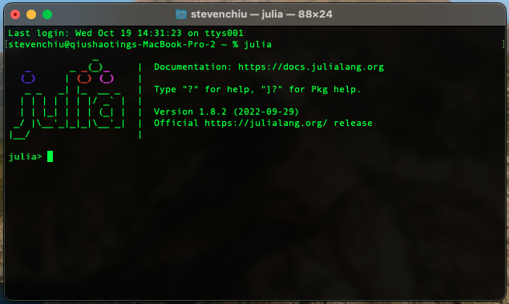
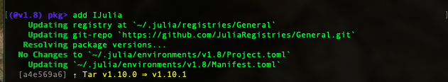
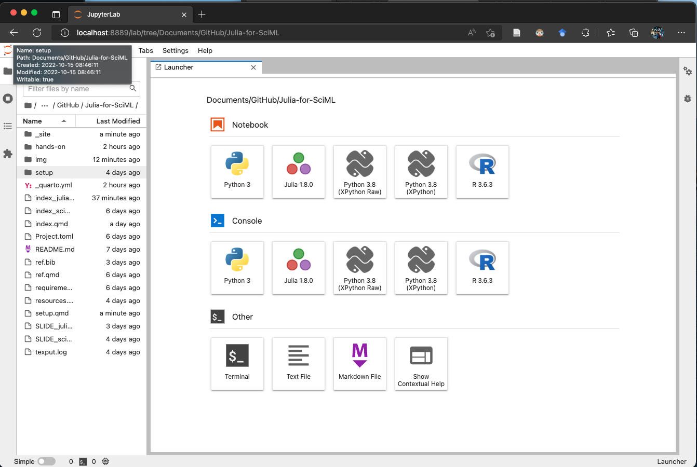

Setup Julia
For the hands-on session, setting up Julia on the local computer is strongly recommended. There are several ways to accomplish this task. First, you can choose one of the following methods to get Julia and Jupyter installed on your local machine.
Install Julia
Official Julia Release
The latest Julia release can be found at official website. First, download the installer in respect of your operating system.
- Download Julia installer: https://julialang.org/downloads/
- Specific instructions for each platform: https://julialang.org/downloads/platform/
jill with pip
If you have already installed pip (if not, try install pip here). Jill is a Julia installer for Linux, macOS and Windows. Jill can be installed via pip. Use the following command to get jill installed.
pip install jillThen, use jill to install Julia.
jill installWhat is expected when Julia is successfully installed?
After getting Julia installed, click the Julia app icon or type julia on cmd/terminal. The Julia REPL1 will show up (Figure 1).

Install IJulia: an Julia package for connecting jupyter
IJulia is an interface that combines Julia and Jupyter interactive environment. This interface can be installed with Julia package manager — Pkg.jl. The following steps show how to get IJulia installed. Noted that any registered packages2 can be installed via these steps.
- Initiate Julia REPL
- Install IJulia. The following two methods are equivalent.
using Pkg
Pkg.add("IJulia")Type ] (right square bracket on your keyboard) to initiate Pkg environment.
]The Pkg mode in Julia REPL is a shortcut to manipulate the Julia environment. To futher install the package, type
add IJulia
(@v1.8) pkg> in blue)Get Started with Jupyter and Julia
Once IJulia.jl is successfully installed, use the following command to initiate jupyter session (Figure 3).
using IJulia
jupyterlab()
Done!
Congratulations! You have successfully gotten started with the Julia programming language. In the following session, we will review Julia basics and the SciML package. The hands-on sessions will require to use JupyterLab to run Julia sessions.
The source code of hands-on session can be downloaded here or viewed on this website.
For further information, the Appendix includes advanced topics such as developer setup and other alternative platforms.